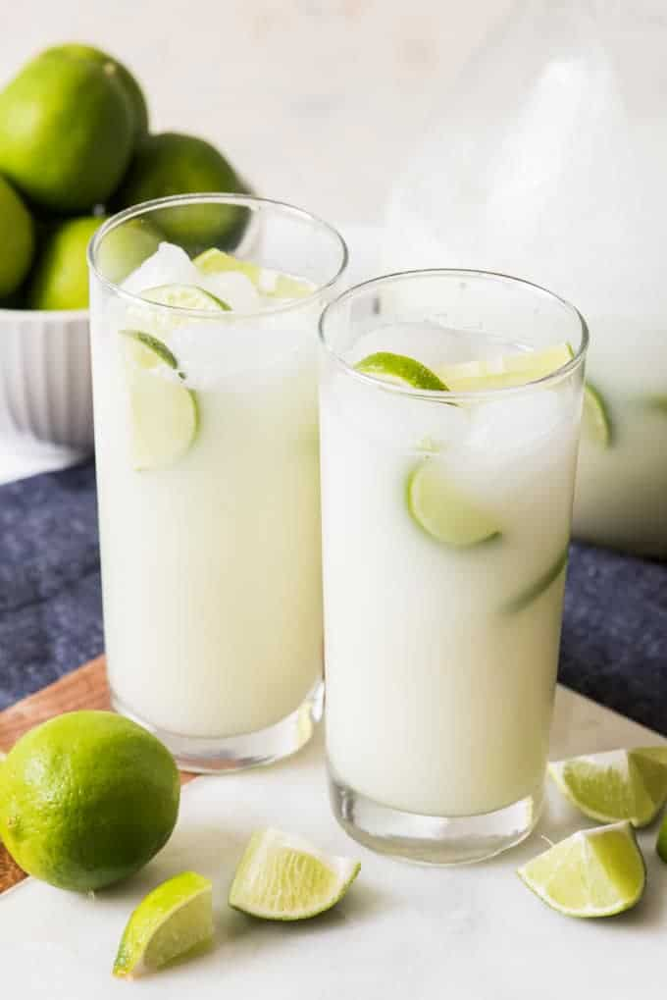

Brazilian Lemonade

DESCRIPTION
This Brazilian lemonade recipe actually uses limes! It is best served immediately.
INGREDIENTS
- 2 limes
- 3 cups water
- ½ cup sugar
- 3 tablespoons sweetened condensed milk
- ice cubes
STEPS
- Wash limes thoroughly. Cut off the ends and slice into eight wedges.
- Place limes in a blender with water, sugar, sweetened condensed milk,
and ice; pulse 5 times, or until smooth. Strain through a fine mesh
strainer to remove rinds. Serve over ice.